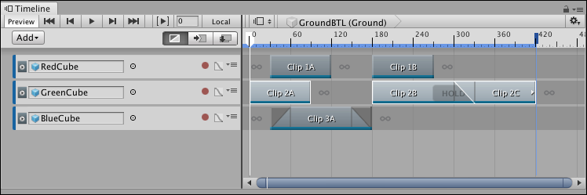
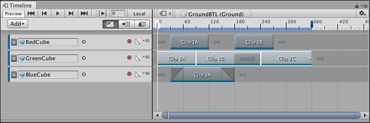

Tiling clips¶
Tile clips to remove gaps and blends between clips on the same track. Tiling clips is useful if you want each clip to begin exactly where the previous clip ends. If you select multiple clips on multiple tracks, you must select at least two clips on the same track for tiling to have an affect.
To tile clips, select at least two clips on the same track.

Three clips with gaps and blends are selected
Right-click on one of the selected clips and select Tile from the context menu. Timeline positions the selected clips based on the position of the first selected clip. The first selected clip does not move, and the duration of each clip remains the same.

Tiling removes gaps and blends between the selected clips